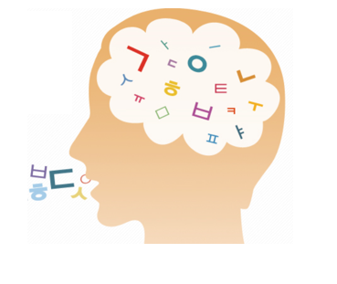

아기의 최초 의사소통 수단
옹알이(babbling)는 전 세계적으로 동일하며, 아기의 최초 의사소통 수단의 말소리이다. 옹알이는 아기의 신체적 성숙으로 인해 나타나는 목, 혀, 입술을 움직여서 내는 근육활동의 결과로서 청각장애아도 생득적인 기제가 있어서 옹알이를 한다. 그러나 청각장애아는 피드백(feed back)을 받지 못할 경우 얼마 지나지 않아 옹알이를 하지 않게 되므로 민감하게 보살펴줘야 언어가 발달한다.

부모의 행복한 순간적 상호작용
부모들은 아기의 옹알이를 듣고 있으면 무아지경에 빠질 정도로 행복을 느낀다. 태어나서 아기는 미소를 자연스럽게 짓고 반사적인 몸짓을 하며 옹알이를 나타낸다. 이때 상황이나 어떤 반응에 따라 높낮이가 다르고 반복어가 2개월 경부터 시작한다. 아기는 엄마 앞에서 가장 힘차게 나오고 눈이 마주칠 때 긴 시간 동안 옹알이를 한다.
6~8개월 사이에 손, 발, 혀, 성대 등을 가지고 놀면서 옹알거리는 소리로 상호작용의 절정을 이룬다. 아기는 의도적으로 자신을 표현하고 남의 행동을 수정하기 위해서 옹알이로 자신이 요구하는 도구적인 기능으로 사용한다.
아기가 옹알이를 할 때 주위 사람들로부터 격려를 받고 자주 피드백을 받으면 옹알이 형태, 억양, 강세 등이 다양하게 발달한다. 그렇지만 부모에게 번번이 무시당하거나 자신을 향한 응대가 없으면 옹알이를 포기하고 조용한 상태가 된다.
옹알이는 자음과 모음 연결의 모국어 놀이
1) 옹알이를 구성하는 음소는 표준음소와 비슷한데 특정한 음절을 되풀이하는 자음과 모음의 연결의 ‘나-나-나’, ‘다-다-다’, ‘마-마-마’ 등과 같은 반향어의 형태이다.
2) 8개월 이후부터 억양이 있는 언어의 변화가 두드러지고 음이 다양해진다.
3) 점차 자신이 듣고 있는 성인 발화의 억양패턴을 모방하는 형태를 취한다. 이 시기에 의사소통을 주고 받는(turn–rtaking) 발성이 이루어질 경우 옹알이를 더욱 선호한다.
4) 이후에 아기의 옹알이는 모국어의 음소체계로 긍정적인 상호작용의 관계를 형성한다. 특히, 부모의 음성이나 제스처 등은 사회적 강화제가 되어 음성놀이를 훨씬 증가시키기 때문에 소리가 더욱 빈번해진다.
음소확장과 음소축소
옹알이는 음소확장(phonetic expansion)으로써 자신이 발성하는 소리에 자극이 되어 점차 소리를 다양하게 내는 현상이 나타난다. 이는 세계 어느 나라 말이든 할 수 있는 잠재 능력을 형성하는 근원이다.
그렇지만 모국어 외에 다른 나라 말소리에 관심을 두지 않으면 자기 문화권에서 사용하는 모국어와 비슷한 소리만 발음하게 되는 음소축소(phonetic contraction)현상이 나타나는 한계점이 발생한다.
옹알이는 아기가 엄마를 알아보고 좋아하는 사람과 싫어하는 사람을 낯가림으로 구분하게 되며, 옹알이 놀이는 정신적, 지적 능력을 스폰지 흡수력처럼 언어자극을 최대한 활용하도록 두뇌발달을 도와준다.
2022.01.15 - [분류 전체보기] - 뇌의 구조와 기능 - 영아기에 성장급등기
뇌의 구조와 기능 - 영아기에 성장급등기
뇌의 구조와 기능은 영아기에 가장 중요 출생 시 신생아의 두뇌는 평균 300~400g 정도로 성인의 25~30% 정도에 불과하지만, 2세경이 되면 75%까지 증가하는 두뇌의 성장급등기(brain growth spurt)를 맞이
think-sis.co.kr